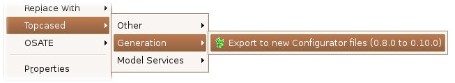

1. Introduction
This document aims to help Topcased users that were using the configuration mechanism to generate graphical editors with the 0.8.0 release. The configuration of an editor
now consists in describing several configuration files :
- an editor configuration file that will describe the editor plugin
- a diagram configuration file for each diagram
2. Convert the old configurator file
An action is available and allow to convert your old configurator file to necessary files for the new configuration and generation process. Select the old
configurator file Right Click > Topcased > Generation > Export to new Configurator files. This will generate a set of new files at the same location
of the old configurator file.

Remarks :
- the new diagramconfigurator files are more complete now. Indeed, new properties have been added (but they are not all managed in the graphical editor yet).
- the property "Template Root Object" should be filled to validate the diagramconfigurator file. It consists in defining the model object that will be the root object
of the template file. Thus, first template files are now generated.
3. Generate the new graphical editor
3.1 Generate the new Editor plugin
The editor configurator file is quite simple. It contains only one model object, an EditorConfiguration with a few properties :
- Provider : the provider name ("Topcased" by default) that should be used in the generated plugin.xml file.
- CopyrightText : you can now define the copyright that should be included in the generated files.
- Force Overwrite : specify whether the non java files that are generated (plugin.xml, MANIFEST.MF, ...) should be overwritten or not.
- Organize Imports : specify whether at the end of the generation process, an "Organize Imports" should be automatically done on the generated classes.
3.2 Generate the new Diagram plugin(s)
The diagram configurator file is more complete. Indeed, it is used to configure all graphical objects used in the diagram, the associated model objects and the Palette of the
diagram. The main differences with the old configuration are the properties of the root object of the model, the DiagramConfiguration :
- Project Name : replaces the old "id" property, so this change is implicit for you. "ProjectName" was already used in the EditorConfigurator file.
- Provider : the provider name ("Topcased" by default) that should be used in the generated plugin.xml file.
- Editor Configurator : replaces the old "editorId" property that was a String value. Now this is a Reference to the EditorConfigurator file that is used.
- Template Root Object : describe the model object that should be root model object when a new Diagram is created. This is the model object that you choose
when you create a new model with the EMF generated editor. This object will be used to create the template files.
- Copyright Text : the copyright that should be included in all the generated files.
- Force Overwrite : specify whether the non java files that are generated (plugin.xml, MANIFEST.MF, ...) should be overwritten or not.
- Organize Imports : specify whether at the end of the generation process, an organize imports should be automatically done on the generated classes.
- Overwrite Graph Conf : specify whether the diagram.graphconf file that is generated should be overwritten or not.
- Same Plugin As Editor : specify whether the diagram plugin should be generated in the same plugin as the editor plugin (you will then have to merge manually
java files when needed).
For each generated diagram, we generate also a file called diagram.graphconf : this file contains all graphical properties and the graphical behavior of the elements that
are represented in this diagram.
4. Customize the generated files
Here is an overview of all the significant API modifications that may caused some problems in your generated code in the case when you have customized it.
- XXXCreationUtils : now, it supports the "presentation" field that will be included in the DI file (the default value is "default").
- XXXPaletteManager : graphical properties were previously passed to the associated tool. The corresponding constructor is now deprecated. No graphical information
are passed now, they will be retrieved from the diagram.graphconf file.
- XXXEditPolicyConstants : previously the constants were used to set the "typeInfo" property of the DI file for a Graphical Element that was not associated with
a model object (i.e. SimpleObjectConfiguration in the configurator file). Now the constants are retrieved from the new XXXSimpleObjectConstants interface.
- XXXNodeEditPart : some methods should not be overriden by default. Default properties should be retrieved from the diagram.graphconf file. These methods should be
removed whether they were not customized.
- getDefaultBackgroundColor();
- getDefaultForegroundColor();
- getDefaultFont();
- getDefaultWidth();
- getDefaultHeight();
- getMinimumWidth();
- getMinimumHeight();
- getMaximumWidth();
- getMaximumHeight();
- XXXEdgeEditPart : some methods should not be overriden by default. Default properties should be retrieved from the diagram.graphconf file. These methods should be
removed when they were not customized.
- getDefaultForegroundColor();
- getDefaultFont();
- getDefaultRouter();
By Jacques LESCOT, Anyware Technologies
May, 15 2006